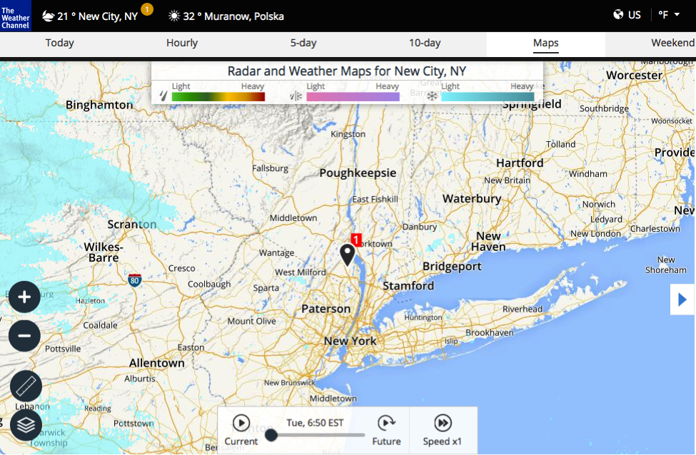

- Access the Web
- |
- Weather Forecast

| ☰ menu |
 start
start
|
 5:00
5:00
|
 extend time extend time
|
|
×
ACCESS THE WEB FINDING WEATHER |
|
IBM Weather Company provides weather forecast data, insight and stories to hundreds of millions of consumers every day through its digital products. Let’s explore one of the products: weather.com.
Objectives 1. Getting Weather Forecast for Your Neighborhoods 2. Getting the Long Term Weather Forecast 3. Using the Allergy Tracker |
|
Exercises 1. Getting Weather Forecast for Your Neighborhoods You are going to check the weather forecast for your town or region. You will use weather.com, a leading online weather forecast provider worldwide. STEPS a) In your browser, open weather.com. The site should automatically detect your location. If not, go to step c).  b) You can see the current weather conditions for your location. Scroll down to see the forecast.  c) You can specify another location to check the weather. Enter the name of the place in the search field at the top-right part of the page. In our example we choose New York, NY, USA  2. Getting the Long Term Weather Forecast Now you are going to search for a 10-day weather forecast and observe how the conditions change in time. STEPS a) In your browser, open weather.com. Type New York, NY in the search field at the top-right part of the page to see the weather conditions in New York. Click the 10-days heading in the top center of the page.  b) Click the browser's back button to see the current weather conditions in New York again. Click on the map and use of the slider to observe the conditions changing in time.  c) Do the same for your location. Click the 10-days heading to see the long term forecast and open the map in order to see the changing conditions in your location. 3. Using the Allergy Tracker Now you will check what are the weather conditions for people suffering from allergies. STEPS a) In your browser, open weather.com. The site should automatically detect your location. If not, enter the name of the place in search field at the top-right part of the page.  b) Hover your mouse pointer over More Forecasts heading in the top-right corner of the page. Click Allergy Tracker.  c) Scroll down to see the breathing conditions. |